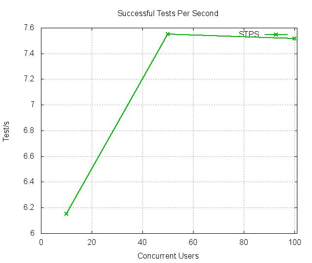
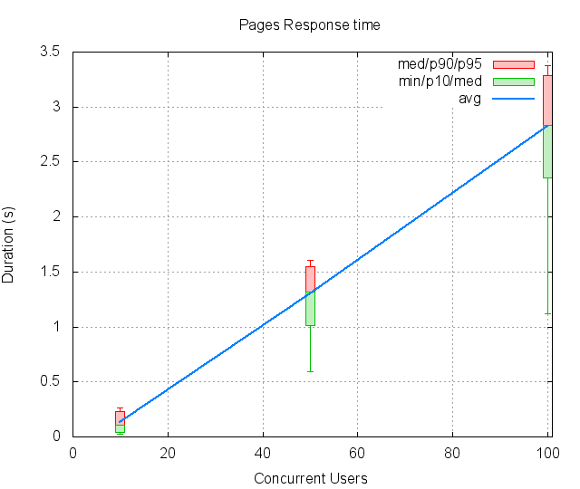
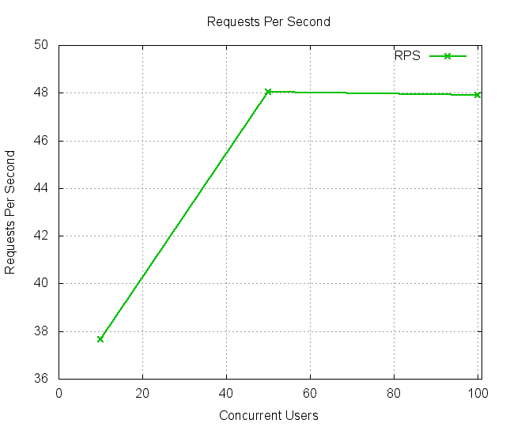
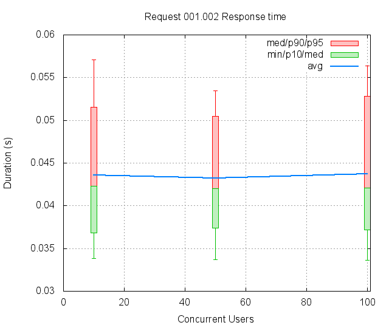
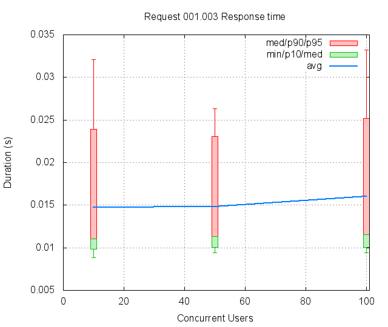
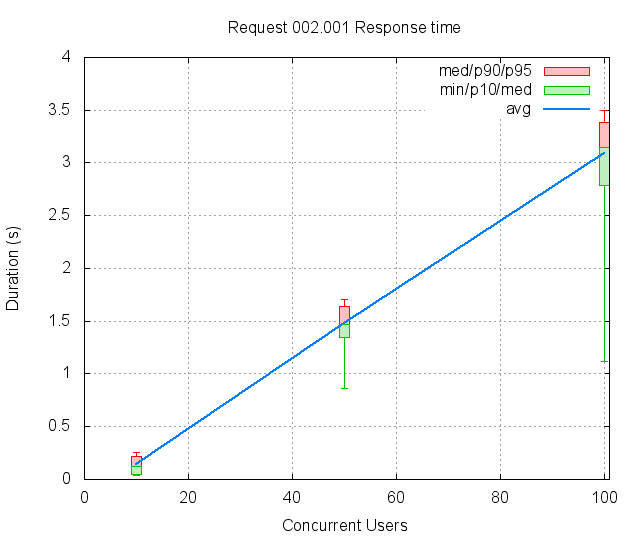
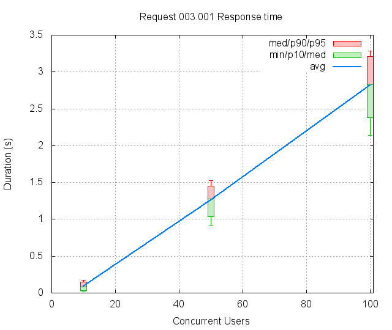
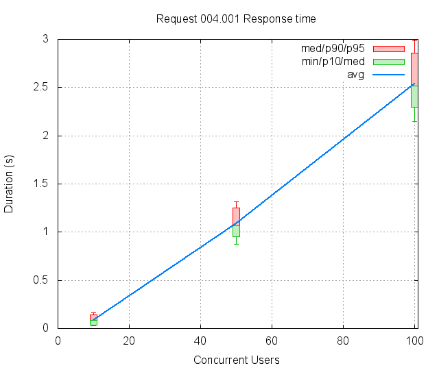

FunkLoad bench report
| Date: | 2014-12-14 00:36:09 |
|---|
Abstract
Testing the critical path of the lab app Bench result of Critical.cache_test: No test description
Table of contents
1 Bench configuration
- Launched: 2014-12-14 00:36:09
- From: ip-172-31-13-231
- Test: test_critical.py Critical.cache_test
- Target server: http://ec2-54-149-74-13.us-west-2.compute.amazonaws.com/
- Cycles of concurrent users: [10, 50, 100]
- Cycle duration: 60s
- Sleeptime between request: from 0.0s to 0.5s
- Sleeptime between test case: 0.01s
- Startup delay between thread: 0.01s
- Apdex: 1.5
- FunkLoad version: 1.16.1
2 Bench content
The test Critical.cache_test contains:
- 4 page(s)
- 0 redirect(s)
- 2 link(s)
- 0 image(s)
- 0 XML RPC call(s)
The bench contains:
- 1273 tests
- 5339 pages
- 8018 requests
3 Test stats
The number of Successful Tests Per Second (STPS) over Concurrent Users (CUs).

CUs STPS TOTAL SUCCESS ERROR 10 6.150 369 369 0.00% 50 7.550 453 453 0.00% 100 7.517 451 451 0.00%
4 Page stats
The number of Successful Pages Per Second (SPPS) over Concurrent Users (CUs). Note that an XML RPC call count like a page.

CUs Apdex* Rating SPPS maxSPPS TOTAL SUCCESS ERROR MIN AVG MAX P10 MED P90 P95 10 1.000 Excellent 25.033 32.000 1502 1502 0.00% 0.026 0.129 1.539 0.041 0.111 0.229 0.263 50 0.951 Excellent 31.817 44.000 1909 1909 0.00% 0.589 1.302 1.857 1.014 1.321 1.547 1.610 100 0.668 POOR 32.133 88.000 1928 1928 0.00% 1.122 2.821 3.954 2.356 2.830 3.289 3.378 * Apdex 1.5
5 Request stats
The number of Requests Per Second (RPS) successful or not over Concurrent Users (CUs).

CUs Apdex* Rating* RPS maxRPS TOTAL SUCCESS ERROR MIN AVG MAX P10 MED P90 P95 10 1.000 Excellent 37.667 46.000 2260 2260 0.00% 0.009 0.086 1.487 0.012 0.063 0.174 0.209 50 0.951 Excellent 48.050 76.000 2883 2883 0.00% 0.009 0.862 1.857 0.012 1.119 1.498 1.552 100 0.668 POOR 47.917 90.000 2875 2875 0.00% 0.009 1.892 3.954 0.013 2.530 3.221 3.303 * Apdex 1.5
6 Slowest requests
The 5 slowest average response time during the best cycle with 50 CUs:
- In page 002, Apdex rating: FAIR, avg response time: 1.48s, get: //upcoming View the upcoming page
- In page 001, Apdex rating: Excellent, avg response time: 1.30s, get: //upcoming View the upcoming page
- In page 003, Apdex rating: Excellent, avg response time: 1.26s, get: //index View the index page
- In page 004, Apdex rating: Excellent, avg response time: 1.09s, get: //index View the index page
- In page 001, Apdex rating: Excellent, avg response time: 0.04s, link: /bootstrap/3.2.0/css/bootstrap.min.css ``
7 Page detail stats
7.1 PAGE 001: View the upcoming page
Req: 001, get, url //upcoming

CUs Apdex* Rating TOTAL SUCCESS ERROR MIN AVG MAX P10 MED P90 P95 10 1.000 Excellent 378 378 0.00% 0.035 0.137 1.487 0.048 0.119 0.215 0.247 50 0.950 Excellent 487 487 0.00% 0.536 1.301 1.791 1.086 1.303 1.504 1.555 100 0.512 POOR 474 474 0.00% 1.084 2.755 3.537 2.335 2.760 3.252 3.309 * Apdex 1.5
Req: 002, link, url /bootstrap/3.2.0/css/bootstrap.min.css

CUs Apdex* Rating TOTAL SUCCESS ERROR MIN AVG MAX P10 MED P90 P95 10 1.000 Excellent 379 379 0.00% 0.034 0.044 0.085 0.037 0.042 0.052 0.057 50 1.000 Excellent 487 487 0.00% 0.034 0.043 0.077 0.037 0.042 0.051 0.053 100 1.000 Excellent 474 474 0.00% 0.034 0.044 0.088 0.037 0.042 0.053 0.056 * Apdex 1.5
Req: 003, link, url /assets/application-61c7d55e81567830684b7378699345b0.css

CUs Apdex* Rating TOTAL SUCCESS ERROR MIN AVG MAX P10 MED P90 P95 10 1.000 Excellent 379 379 0.00% 0.009 0.015 0.054 0.010 0.011 0.024 0.032 50 1.000 Excellent 487 487 0.00% 0.009 0.015 0.049 0.010 0.011 0.023 0.026 100 1.000 Excellent 473 473 0.00% 0.009 0.016 0.069 0.010 0.012 0.025 0.033 * Apdex 1.5
7.2 PAGE 002: View the upcoming page
Req: 001, get, url //upcoming

CUs Apdex* Rating TOTAL SUCCESS ERROR MIN AVG MAX P10 MED P90 P95 10 1.000 Excellent 379 379 0.00% 0.034 0.139 1.118 0.051 0.125 0.219 0.257 50 0.799 FAIR 498 498 0.00% 0.862 1.480 1.853 1.350 1.470 1.636 1.704 100 0.507 POOR 498 498 0.00% 1.122 3.089 3.954 2.786 3.152 3.387 3.501 * Apdex 1.5
7.3 PAGE 003: View the index page
Req: 001, get, url //index

CUs Apdex* Rating TOTAL SUCCESS ERROR MIN AVG MAX P10 MED P90 P95 10 1.000 Excellent 374 374 0.00% 0.026 0.093 0.831 0.031 0.081 0.151 0.173 50 0.968 Excellent 471 471 0.00% 0.916 1.259 1.857 1.034 1.276 1.451 1.524 100 0.500 POOR 500 500 0.00% 2.143 2.818 3.599 2.379 2.825 3.210 3.280 * Apdex 1.5
7.4 PAGE 004: View the index page
Req: 001, get, url //index

CUs Apdex* Rating TOTAL SUCCESS ERROR MIN AVG MAX P10 MED P90 P95 10 1.000 Excellent 371 371 0.00% 0.026 0.088 0.348 0.033 0.082 0.145 0.167 50 0.994 Excellent 453 453 0.00% 0.875 1.089 1.567 0.953 1.069 1.248 1.316 100 0.500 POOR 456 456 0.00% 2.144 2.538 3.620 2.293 2.513 2.861 2.985 * Apdex 1.5
8 Definitions
CUs: Concurrent users or number of concurrent threads executing tests.
Request: a single GET/POST/redirect/xmlrpc request.
Page: a request with redirects and resource links (image, css, js) for an html page.
STPS: Successful tests per second.
SPPS: Successful pages per second.
RPS: Requests per second, successful or not.
maxSPPS: Maximum SPPS during the cycle.
maxRPS: Maximum RPS during the cycle.
MIN: Minimum response time for a page or request.
AVG: Average response time for a page or request.
MAX: Maximmum response time for a page or request.
P10: 10th percentile, response time where 10 percent of pages or requests are delivered.
MED: Median or 50th percentile, response time where half of pages or requests are delivered.
P90: 90th percentile, response time where 90 percent of pages or requests are delivered.
P95: 95th percentile, response time where 95 percent of pages or requests are delivered.
Apdex T: Application Performance Index, this is a numerical measure of user satisfaction, it is based on three zones of application responsiveness:
Satisfied: The user is fully productive. This represents the time value (T seconds) below which users are not impeded by application response time.
Tolerating: The user notices performance lagging within responses greater than T, but continues the process.
Frustrated: Performance with a response time greater than 4*T seconds is unacceptable, and users may abandon the process.
By default T is set to 1.5s this means that response time between 0 and 1.5s the user is fully productive, between 1.5 and 6s the responsivness is tolerating and above 6s the user is frustrated.
The Apdex score converts many measurements into one number on a uniform scale of 0-to-1 (0 = no users satisfied, 1 = all users satisfied).
Visit http://www.apdex.org/ for more information.
Rating: To ease interpretation the Apdex score is also represented as a rating:
- U for UNACCEPTABLE represented in gray for a score between 0 and 0.5
- P for POOR represented in red for a score between 0.5 and 0.7
- F for FAIR represented in yellow for a score between 0.7 and 0.85
- G for Good represented in green for a score between 0.85 and 0.94
- E for Excellent represented in blue for a score between 0.94 and 1.
Report generated with FunkLoad 1.16.1, more information available on the FunkLoad site.